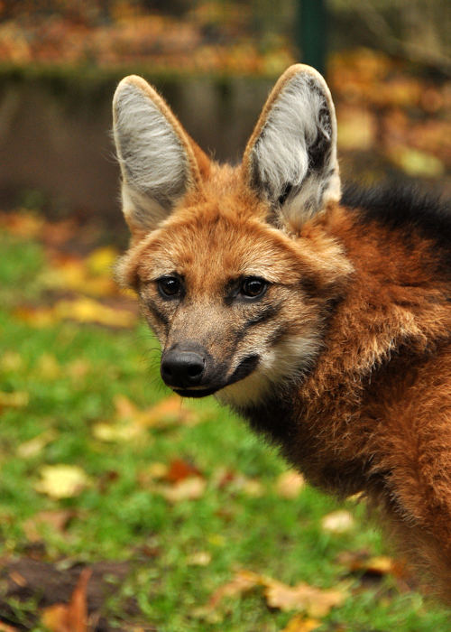
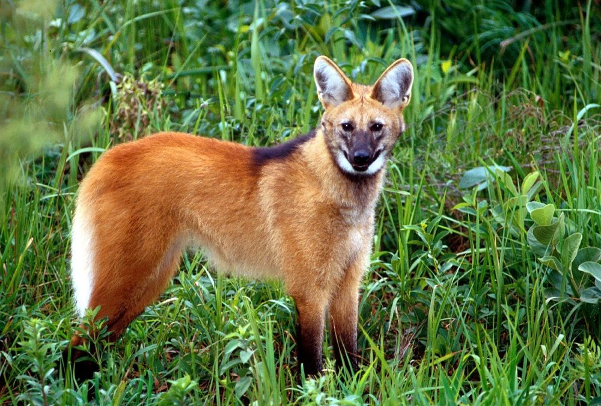
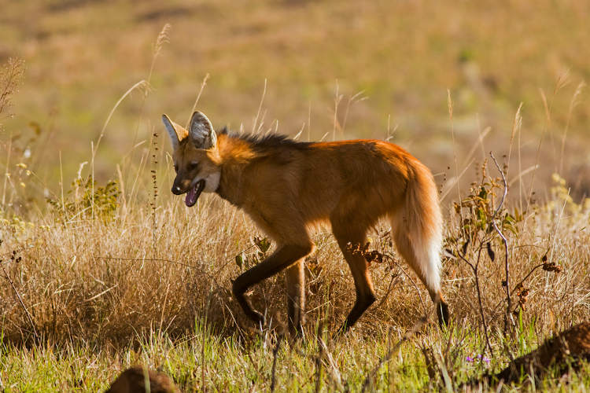

Lobo Guará
da família Canis jubatusÉ o maior canídeo da América do Sul, podendo atingir entre 20 e 30 kg de peso e até 90 cm na altura da cernelha. Suas pernas longas e finas e a densa pelagem avermelhada lhe conferem uma aparência inconfundível.
Apesar de não ser considerado em perigo de extinção pela IUCN, todos os países em que ele ocorre o classificam em algum grau de ameaça, apesar de não se saber a real situação das populações.
O lobo-guará é adaptado aos ambientes abertos das savanas sul-americanas, sendo um animal crepuscular e onívoro, com importante papel na dispersão de sementes de frutos do cerrado, principalmente a lobeira (Solanum lycocarpum).
Solitário, os territórios são divididos entre um casal, que se encontra no período do estro da fêmea. Esses territórios são bastante amplos, podendo ter uma área de até 123 km². A comunicação se dá principalmente através de marcação de cheiro, mas também ocorrem vocalizações semelhantes a latidos. A gestação dura até 65 dias, com os recém-nascidos de cor preta pesando entre 340 e 430 g.
“Há algo no uivar do lobo que tira um homem do aqui e agora e o transporta para uma floresta da mente.”
- Surgiu: 15.000 anos
- Tipo: Carnivoro
- Idade média: 12~15 anos
- Peso médio: 20,5~30 kg
- Familia: Canidae
Estima-se que existam cerca de 23 mil animais na natureza, sendo um animal popular em todos os zoológicos.
Está ameaçado principalmente por causa da destruição do cerrado para ampliação da agricultura, atropelamentos, caça e doenças advindas dos cães domésticos.